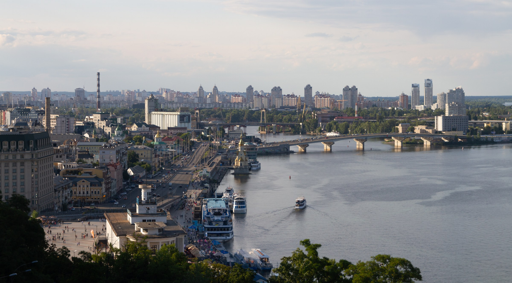

Знайоме місто. Нові враження.
Київ:місто для своїх
Місця, атмосфера та маршрути, які допомагають побачити Київ по-новому.
Дніпро · Правий берегВідкривай своє місто
Твій Київ
починається тут
Київ — це місто, у якому поєднуються історія, сучасна архітектура, затишні вулиці та місця для відпочинку. На цьому сайті зібрані цікаві локації Києва для тих, хто хоче краще пізнати місто.